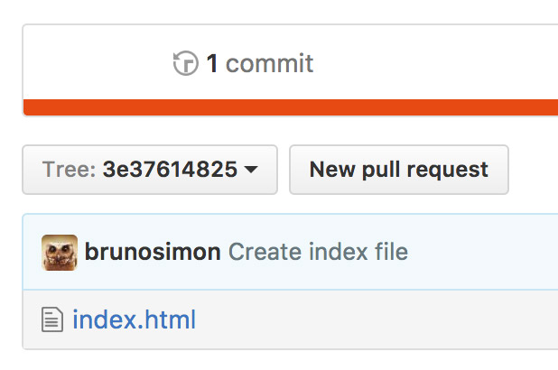

Développement web
Cours 22
Git
Qu'est-ce que c'est ?
Git est un outil de versionning
- Créé par Linus Torvalds
- Permet de sauvegarder les différentes versions d'un projet
- Historique
- Idéal pour travailler à plusieurs
- Difficile au début
- Indispensable ensuite
Chaque modification équivaut à une nouvelle version du projet
Une modification est appelée commit
- Quoi ?
Modification d'un ou plusieurs fichiers (création, modification, suppression) - Par qui ?
Auteur du commit - Quand ?
Date de création du commit - Pourquoi ?
Description "human friendly" de la modification
Il existe des logiciels permettant d'utiliser Git, mais nous allons apprendre à l'utiliser en lignes de commande
Ces commandes doivent être exécutées dans un terminal
Terminal
Pour les Macs
Recherchez l'application Terminal
Celui-ci fonctionne avec les commandes Unix que nous allons voir plus tard
Alternatives :
Sur PC
Plusieurs options
Command Prompt
En français Invite de Commandes
Il s'agit du terminal historique de Windows
Peu pratique
Les commandes Unix ne fonctionnent pas
PowerShell
Il s'agit du nouveau terminal Windows
Plus pratique et supporte les commandes Unix
Git Bash
Pourra être installé avec Git
Supporte les commandes Unix
CMDER
Téléchargeable: cmder.net
Support des commandes Unix
Sur PC et Mac
Alternativement, si vous utilisez VSCode, vous pouvez utiliser le terminal intégré
Faites CMD + J pour le faire apparaître
Ce terminal utilise en réalité une des différentes options vues précédemment, mais l'intégration à l'éditeur le rend plus pratique
Nous n'allons voir qu'une petite partie des commandes unix séparées en 3 groupes
- Primordiales
- Pratiques
- Bonus
Commandes primodiales
-
pwd : afficher le chemin du dossier courant
pwd -
ls : afficher les fichiers et dossiers dans le dossier courant
ls -
cd : se déplacer dans un dossier
cd ./dossier-1/dossier-2 cd dossier-1/dossier-2 # même qu'au dessus cd ../..
Commandes pratiques
-
clear : effacer le contenu du terminal
clear -
man : afficher le manuel d'une commande (Q pour quitter)
man clear -
open : ouvrir un dossier dans le finder (Mac)
open ./ open dossier-1
Commandes pratiques
- touch : créer un fichier (Mac)
- cp : copier un fichier ou dossier
- mv : déplacer un fichier ou dossier
- mkdir : créer un dossier
- rm : supprimer un fichier
- rmdir : supprimer un dossier
- vim : éditer un fichier avec Vim (Mac)
-
say : faire parler votre ordinateur (Mac)
say -v Thomas "Coucou la famille"
Astuces
- Sur Mac, vous pouvez créer des onglets avec CMD + T
- Pour ne pas avoir à écrire un chemin entier, glissez/déposez le dossier depuis le finder dans le terminal
- Quand vous écrivez le nom d'un fichier ou dossier, tapez la touche TAB pour auto-compléter
- Utilisez les flèches haut et bas pour naviguer dans l'historique des commandes
Installer Git
Git fonctionne depuis le terminal
Pour savoir si git est déjà installé, ouvrez le terminal et tapez git --version
Si la version s'affiche, passez l'étape d'installation

Mac
- Télécharger le fichier à partir de l'adresse suivante
git-scm.com/download/mac - Lancez le .dmg
- Lancez le .pkg
- Suivez l'installation
Windows
- Télécharger le fichier à partir de l'adresse suivante
git-scm.com/download/win - Lancez le .exe
- Suivez l'installation et laissez les options par défaut
À la fin, vous pouvez choisir de lancer Git Bash
GitHub

Un projet git est appelé repository ou juste repo
Il est possible d'avoir un repo uniquement sur son ordinateur, mais on perd l'intérêt de Git qui est aussi de sauvegarder nos données et de travailler à plusieurs
Il nous faut donc un hébergeur Git en ligne
Nous allons utiliser GitHub
GitHub est plus qu'un hébergeur Git
- Réseau social
- Bug tracker
- Project manager
- Team manager
- Hébergeur de sites
- Support de documentation
- Critère de recrutement
Il existe différentes offres, mais la version gratuite devraient amplement vous suffire
Alternatives
Allez sur github.com et créez-vous un compte
⚠️ Retenez bien votre pseudo, votre email et votre mot de passe
Pour connecter Git à votre compte github
- Récupérez votre pseudo GitHub et l'email que vous avez utilisé
- Ouvrez le terminal n'importe où
-
Tapez
git config --global user.name "votrepseudo" -
Tapez
git config --global user.email "votre@email"
Cette configuration sera valable pour tous vos repo sur l'ordinateur
Créer et récupérer un repository
Créer un repo sur GitHub
- Allez sur votre profile
- Allez dans l'onglet Repositories
- Cliquez sur New
-
Choisissez un nom de repo
(minuscules, majuscules, tirets, underscore, chiffres)
(ex: esin-e1-p2026-test) - Cliquez sur Create repository
Récupérer en local
- Ouvrez le terminal
-
Allez dans le dossier contenant vos projets
(cd, pwd, ls) -
Tapez
l'URL de votre repo est disponible sur la page du repo
git clone https://url-de-votre-repo
(ex: https://github.com/brunosimon/esin-e1-p2026-test.git) -
Un dossier du nom du repo devrait avoir été créé, allez dedans
cd esin-e1-p2026-test # par exemple
git clone permet de récupérer un repo en local
Actuellement le dossier est vide, mais si d'autres développeurs ou nous-même avions commencé à travailler dessus, on aurait récupérer les fichiers
Le dossier nouvellement créé contient un dossier .git (invisible sur mac)
Ce dossier contient la configuration ainsi que l'historique de votre projet (actuellement pas grand chose)
Ne touchez jamais au contenu de ce dossier
Faire un commit
Maintenant que nous avons le repo en local, nous voulons commencer à travailler dessus
Faire une modification
Comme première modification, nous allons simplement créer un fichier index.html
- Créez un fichier index.html
- Rajoutez n'importe quoi dedans
Astuce
La commande git status permet de lister le(s) fichier(s) modifié(s)
La commande git diff index.html permet de lister les modifications dans le(s) fichier(s)
Indiquer quels fichiers sont modifiés
Lorsque nous avons créé le fichier index.html, celui-ci était untracked. Il ne fait pas encore parti du repo.
La commande git add index.html permet d'indiquer que le fichier est maintenant staged
Ce fichier sera enregistré dans git au prochain commit
Il est possible d'envoyer plusieurs fichiers en même temps
- git add index.html stage uniquement un fichier
- git add mon-dossier/ stage un dossier entier et tout son contenu
- git add --all stage tous les fichiers modifiés
Créer le commit
La commande git commit ... permet de créer le commit
Tous les fichiers stagés vont faire parti de ce commit
- Quoi ?
Fichiers stagés - Par qui ?
Git config - Quand ?
Date actuelle - Pourquoi ?
???
Il faut donc rajouter une description à notre commit pour expliquer ce qu'il apporte
Tapez git commit -m "Create home page"
-m permet de renseigner directement le message associé au commit
Nous pouvons désormais envoyer notre commit sur le serveur
Tapez git push
À cette étape, le terminal devrait vous demander de vous authentifier
Choisissez "Web browser" en appuyant sur la touche 1
Cela devrait ouvrir une page web vous permettant d'autoriser Git Credential Manager
Rendez-vous sur le repo pour découvrir votre commit avec le fichier index.html

Ceci était un workflow classique lorsqu'on travaille seul sur le projet
- Faire la modification
- Stager les fichiers avec git add
- Commiter avec git commit
- Envoyer avec git push
Travailler à plusieurs
Même si votre repo est publique, d'autres développeurs ne peuvent le modifier sans votre accord
Pour autoriser un autre développeur à faire des modifications, il faut l'ajouter dans les collaborateurs
- Aller sur la page de votre repo
- Aller dans l'onglet Settings
- Aller dans la partie Manage access
- Click the Invite a collaborator button
- Recherchez le pseudo de l'utilisateur Github et cliquez sur Add collaborator
Le développeur doit accepter l'invitation
Il peut maintenant récupérer le projet git clone https://github.com/brunosimon/esin-e1-p2026-test.git
Et faire des commits
Pour récupérer les modifications faites par les autres développeurs, taper git pull
Résoudre des conflits
Avant de pusher notre commit, si un autre développeur a déjà envoyé un commit, git rejettera notre push
Nous allons commencer par récupérer les modifications avec git pull
⚠️ Il ne doit pas y avoir de modifications non commités
Deux cas peuvent se produire
- Les fichiers modifiés ne sont pas les mêmes
- Les fichiers modifiés sont les mêmes
Les fichiers modifiés ne sont pas les mêmes
Si d'autres fichiers ont été modifié entre-temps et qu'il n'y a pas de conflit, l'éditeur vi va apparaître avec un contenu pré rempli

La première ligne correspond à la description du commit
Si vous souhaitez modifier la description, appuyez sur la touche i (insert)
Pour quitter le mode insert, appuyer sur CTRL + C
Pour sauvegarder tapez :wq et faites ENTRER
- : permet d'écrire une commande VI
- w indique de sauvegarder (write)
- q indique de quitter (quit)

Un nouveau commit qu'on appelle merge vient d'être créé automatiquement
Vous pouvez envoyer les commits serainement avec git push
Les fichiers modifiés sont les mêmes
Si un développeur a modifié le même fichier que vous, il va falloir choisir quelle modification conserver

Git ne peut décider à votre place quel commit choisir. Vous allez devoir le résoudre vous-même
Dans l'exemple qui suit, nous avons décidé d'ajouter une liste de nombres, mais un autre développeur a décidé de rajouter une liste de lettres
Lorsque nous avons fait le git pull, git a modifié le code afin de faire apparaître les deux commits
Certains éditeurs intègrent des solutions pour résoudre les conflits conflits (VSCode)
La partie <<<<<<< HEAD correspond à notre code
L'autre partie correspond au code de l'autre développeur
- Corrigez le conflit manuellement
- Testez que le projet fonctionne
- Stagez le(s) fichier(s) concerné(s) avec git add index.html
- Créez un commit en tapant simplement git commit
- Sauvegardez et quittez l'éditeur VI avec :wq
- Envoyer avec git push
La résolution de conflits est la partie la plus difficile à maîtriser
Il faut faire preuve de rigueur et d'organisation dans la team
Astuce
Faites un git pull avant de commencer à travailler pour vous assurer d'avoir la dernière version du projet
Vous avez compris l'essentiel du workflow git
Astuces / Bonus
README
Un readme est un fichier descriptif accompagnant un projet
On peut le retrouver dans des sous-dossiers, mais il est en général à la racine
Son contenu apparaît directement sur le repo
Soignez vos readme
Plusieurs noms possibles
- readme.md
- README.md
- README
- ...
Informations qu'on peut retrouver dans un readme
- Description
- Features
- Exemples d'utilisation
- Installation
- Auteurs
- Contributeurs
- Remerciements
- License
- ...
Le readme peut être écrit en markdown
Markdown est un language de formatage
Nous allons pouvoir créer des titres de différentes tailles, des tableaux, des images, du code, des listes, etc.
Licenses
Lorsque vous mettez à disposition des autres un projet, vous souhaitez probablement garder un certain contrôle sur son utilisation ou au moins sur sa paternité
Cela est possible grâce aux licenses
Le site choosealicense.com, créé par GitHub, vous permet de choisir une license et vous accompagnera dans sa mise en place
Une des plus répandues est la license MIT dont voici une explication ligne par ligne
Une autre connue est CC0 permettant de dédiée l'oeuvre au domaine public
Repo privé
Vous pouvez à tout moment décider de passer votre repository en privé pour ensuite ajouter des collaborateurs qui auront le droit de travailler dessus


Ignorer des fichiers
Il est possible d'indiquer à git d'ignorer certains fichiers afin qu'ils ne soient pas commités
- .DS_Store
- node_modules
- vendors
- fichiers sensibles (Accès)
- builds
- ...
Pour cela, créez simplement un fichier .gitignore à la racine du projet
Chaque ligne de se fichier correspond à une règle
| fichier.txt | fichier.txt partout dans le projet |
| /fichier.txt | fichier.txt à la racine |
| /toto/fichier.txt | fichier.txt dans le dossier toto |
| toto | dossier toto partout dans le projet |
| /toto | dossier toto à la racine |
| /toto/** | tous les fichiers dans le dossier toto |
| *.txt | tous les fichiers .txt |
| /toto/**.txt | tous les fichiers .txt dans le dossier toto |
Le site gitignore.io permet de générer facilement ces fichiers
Reset
Si vous venez de stagé des fichiers (sans commit), mais que vous souhaitez annuler, tapez simplement git reset
Cela ne va pas annuler vos modifications
Amend
Si vous venez de faire un commit (sans push), mais que vous souhaitez le modifier, vous pouvez utiliser amend
Exemple: git commit --amend -m "Pwet" va réécrire le message de commit
Log
Pour afficher les commits, tapez git log
Pour les afficher en version plus simple, tapez git log --oneline
Pour les afficher en version plus simple avec les branches, tapez git log --oneline --graph
Checkout
Si vous avez apporté des modifications que vous souhaitez annuler, vous pouvez utiliser checkout
Exemple: git checkout index.html
⚠️ Vous perdrez vos modifications
Checkout permet aussi de revenir à un ancien commit (une ancienne version du projet)
Nous allons avoir besoin de connaître le hash correspondant au commit
Nous pouvons récupérer les hash dans les commits sur Github ou alors grâce à git log
Il suffit ensuite de taper git checkout XXXXXXX
Pour revenir à la dernière version, taper git checkout master
master correspondant à la branche (???)
Si vous avez fait une fausse manipulation, mais que vous ne savez pas quoi faire pour réparer l'erreur, faites une recherche. Ne risquez pas d'empirer la situation.
Branches
Il peut arriver d'avoir une modification complexe à apporter qui risquerait de créer trop de conflits avec les autres développeurs
Git permet de créer des branches
Cela revient à créer une copie du projet à un instant T et de pouvoir faire des modifications sur chacune des deux branches sans rentrer en conflit
Une fois la modification terminée, on peut merger les branches en résolvant les éventuels conflits
Créer une branche et passer dessus
| git branch | lister les branches |
| git branch toto | créer une branche toto |
| git switch toto | passer sur cette branche |
Faire un commit
| modifier un fichier | |
| git push -u origin toto | pusher sur la branche toto (-u permet d'en faire la branche par défaut) |
Merger les modification
| git switch master | retourner sur la branche master |
| git merge toto | fusionner la branche toto sur la branche master |
| git push | pusher sur la branch master |
Supprimer la branche
| git branch -d toto | supprimer la branche en local |
| git push origin --delete toto | supprimer la branche en remote (sur GitHub) |
Pour récupérer la branche "toto" créée par un autre développeur, tapez git fetch origin toto
Commandes
| cd ./dossier | Navigue dans les dossiers |
| ls | Liste les fichiers/dossiers |
| pwd | Affiche la position actuelle |
| git clone http://... | Récupère un repo en local |
| git pull | Récupère les derniers commits |
| git add ... | Stage les fichiers modifiés en vue de faire un commit |
| git status | Liste le(s) fichier(s) modifié(s) |
| git diff ... | Liste les lignes modifiées dans le(s) fichier(s) modifié(s) |
| git reset | Annule le staging |
| git commit -m "..." | Crée un commit |
| git push | Envoie le commit |
| git checkout ... | Annule les modifications |
Conseils
- Une feature = un commit
- Suivez des guidelines de commits (ex: Immersive Garden)
- Évitez de modifier les fichiers des autres
- Mettez-vous d'accord sur la structure et la syntaxe
- Évitez les plugins qui modifient automatiquement le code
- Renseignez le .gitignore dès le début du projet (gitignore.io)
- Vérifiez bien les modifications avant chaque commit
- Évitez de versionner les gros fichiers
- Faites de beaux readme
Tutoriels
Applications
-
SourceTree
Mac et Windows
Gratuite -
GitHub
Mac et Windows
Gratuite -
Tower
Mac et Windows
Payante ($79)(-50% pour étudiants) -
GitKraken
Mac et Windows
Payante ($60/an)(gratuit pendant 1 and pour étudiants)
-
VS Code
Mac et Windows
Gratuit
Intègre directement Git
Git est indispensable pour la pérennité de vos projets que ce soit pour des projets perso ou en équipe
Faites-en bon usage